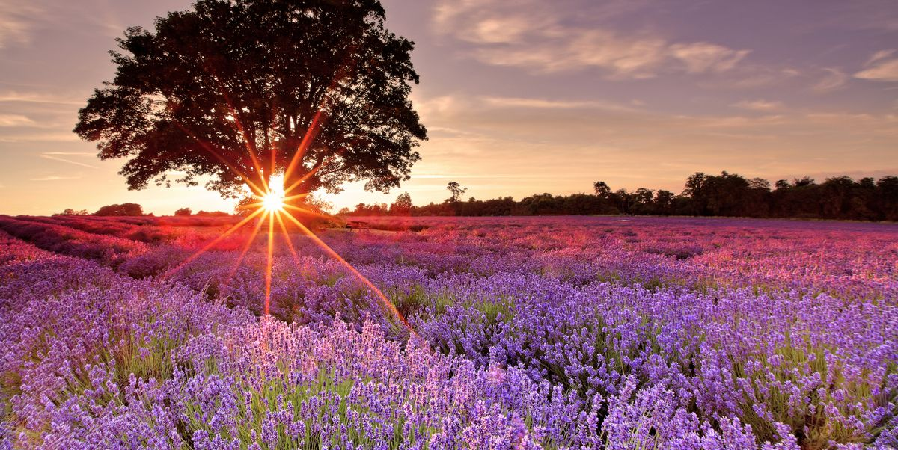

Welcome!
Welcome to Lavandula Fields! We sell fresh lavender (only if bought in store) and dried lavender. We also use our locally produced lavender to produce fragrances, lotions, soaps, teas, flavoring, medicines, and essential oils. If you are interested in purchasing any of our products, please proceed to our shop!

Our hours of operation is from 8am to 5pm from Monday to Friday. If you would like to speak to one of us, please visit our Contact or click here. Thank you for visiting our website!
About us
Founded February 2016, Lavandula Fields was founded after our owner, Eric, had inhereted the farm from their late grandfather. They moved out of the city, and began to fix up the farm by themselves and the help of the rural neighborhood. From there, our owner had gotten married, had a lovely family pet and from there began to sell the lavender we have in our shop now.
